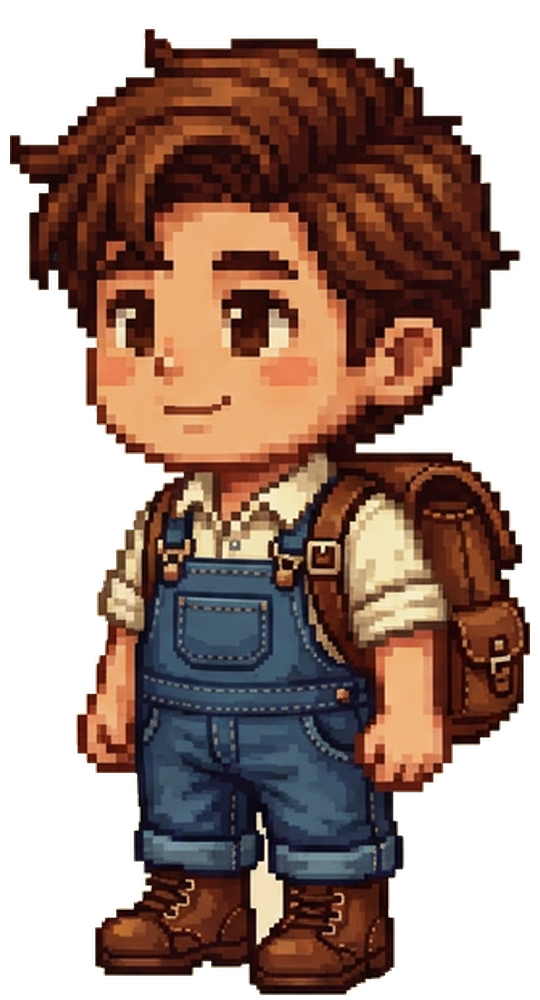
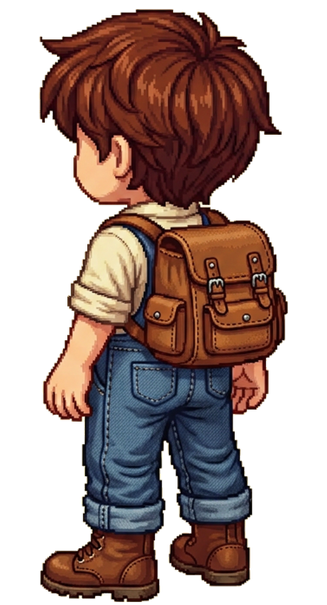

Gambar ulang beresolusi 540 × 1000 piksel, dengan detail rambut, pakaian, sepatu, dan tas yang lebih jelas. Ini baru pose berdiri untuk pemeriksaan, bukan animasi final dan belum dipasang pada launcher. Proporsi tampak depan dan belakang masih perlu diselaraskan.

